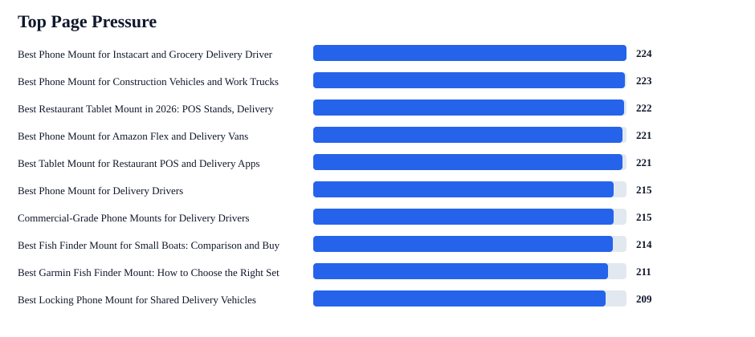
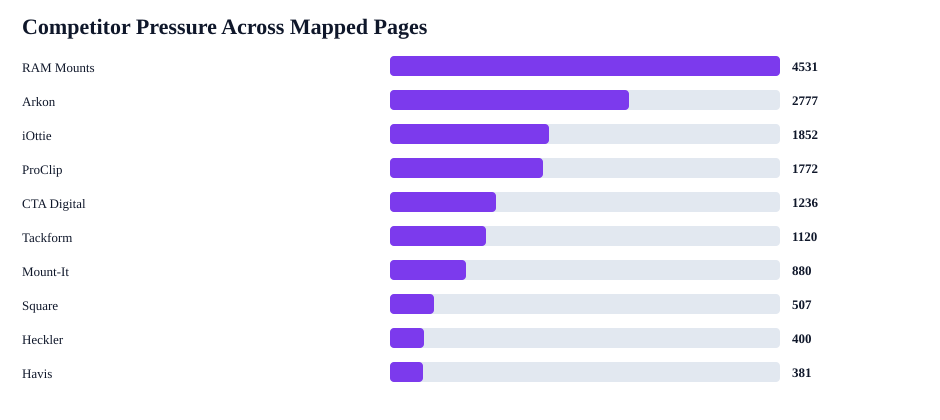

iBOLT Query-To-Page AI Visibility Matrix
This joins weak benchmark prompts to the live Shopify page that should fix each answer, including competitor pressure, page issues, product modules, duplicate risk, and retest prompts.
Query rows
31
mapped to pages
Mapped pages
26
with benchmark pressure
Non-branded mention
5%
4/75
Citation rate
0%
0/93
Duplicate risk pages
13
resolve first
Competitors mapped
14
brands


Highest-Priority Page Fixes
| Priority | Page | Queries | Zero mention | Competitor-only | Competitors | Action |
|---|---|---|---|---|---|---|
| 224 | Best Phone Mount for Instacart and Grocery Delivery Drivers | 1 | 1 | 3 | iOttie; RAM Mounts; Peak Design | Resolve canonical/duplicate risk, then merge strongest answer blocks into the surviving page. |
| 223 | Best Phone Mount for Construction Vehicles and Work Trucks | 1 | 1 | 3 | RAM Mounts; Arkon; iOttie; ProClip; Tackform | Resolve canonical/duplicate risk, then merge strongest answer blocks into the surviving page. |
| 222 | Best Restaurant Tablet Mount in 2026: POS Stands, Delivery App Stations, and Multi-Tablet Solutions Compared | 3 | 3 | 9 | RAM Mounts; Arkon; CTA Digital; iOttie; Tackform; Mount-It; Bouncepad | Add query-exact quick answer, named iBOLT product module, fair competitor tradeoff, FAQ schema, and image alt text. |
| 221 | Best Phone Mount for Amazon Flex and Delivery Vans | 1 | 1 | 3 | RAM Mounts; iOttie; Arkon; ProClip | Resolve canonical/duplicate risk, then merge strongest answer blocks into the surviving page. |
| 221 | Best Tablet Mount for Restaurant POS and Delivery Apps | 1 | 1 | 3 | CTA Digital; Heckler; Arkon; Mount-It; RAM Mounts; Square | Resolve canonical/duplicate risk, then merge strongest answer blocks into the surviving page. |
| 215 | Best Phone Mount for Delivery Drivers | 1 | 1 | 3 | iOttie; RAM Mounts; ProClip | Resolve canonical/duplicate risk, then merge strongest answer blocks into the surviving page. |
| 215 | Commercial-Grade Phone Mounts for Delivery Drivers | 1 | 1 | 3 | RAM Mounts; Arkon; ProClip; iOttie | Resolve canonical/duplicate risk, then merge strongest answer blocks into the surviving page. |
| 214 | Best Fish Finder Mount for Small Boats: Comparison and Buyer's Guide | 1 | 1 | 3 | RAM Mounts | Resolve canonical/duplicate risk, then merge strongest answer blocks into the surviving page. |
| 211 | Best Garmin Fish Finder Mount: How to Choose the Right Setup for Your Boat or Kayak | 3 | 3 | 4 | RAM Mounts | Add query-exact quick answer, named iBOLT product module, fair competitor tradeoff, FAQ schema, and image alt text. |
| 209 | Best Locking Phone Mount for Shared Delivery Vehicles | 1 | 1 | 3 | Arkon; RAM Mounts; iOttie; ProClip; Tackform | Resolve canonical/duplicate risk, then merge strongest answer blocks into the surviving page. |
| 205 | Rough Water Phone Mount for Boat: Heavy-Duty Solutions That Handle the Chop | 1 | 1 | 3 | Arkon; RAM Mounts; iOttie; ProClip; Tackform | Add query-exact quick answer, named iBOLT product module, fair competitor tradeoff, FAQ schema, and image alt text. |
| 203 | Best Locking Tablet Stand for Food Trucks and Quick-Service Restaurants | 1 | 1 | 3 | CTA Digital; Heckler; Kensington; Mount-It; RAM Mounts | Resolve canonical/duplicate risk, then merge strongest answer blocks into the surviving page. |
| 197 | Magnetic vs Clamp Phone Mounts for Delivery Work | 1 | 1 | 2 | iOttie; RAM Mounts | Resolve canonical/duplicate risk, then merge strongest answer blocks into the surviving page. |
| 188 | Choosing the Best Kayak Fish Finder Mount for Secure and Convenient Fishing | 1 | 1 | 3 | RAM Mounts | Add query-exact quick answer, named iBOLT product module, fair competitor tradeoff, FAQ schema, and image alt text. |
| 185 | Barcode Scanner Mounts | 1 | 1 | 3 | Havis; RAM Mounts; Zebra; Arkon; ProClip; Square | Add query-exact quick answer, named iBOLT product module, fair competitor tradeoff, FAQ schema, and image alt text. |
| 183 | Best Tablet and Phone Mounts for Trucks and ELD Compliance (2026) | 1 | 1 | 3 | Arkon; RAM Mounts; ProClip | Add query-exact quick answer, named iBOLT product module, fair competitor tradeoff, FAQ schema, and image alt text. |
Highest-Priority Queries
| Priority | Query | Stage | Page | Competitors | Next action |
|---|---|---|---|---|---|
| 212 | best phone mount for Instacart and grocery delivery drivers | not mentioned | Best Phone Mount for Instacart and Grocery Delivery Drivers | iOttie; RAM Mounts; Peak Design | Resolve canonical/duplicate risk before rewriting. |
| 211 | best phone mount for construction vehicles and work trucks | not mentioned | Best Phone Mount for Construction Vehicles and Work Trucks | RAM Mounts; Arkon; iOttie; ProClip; Tackform | Resolve canonical/duplicate risk before rewriting. |
| 209 | best phone mount for Amazon Flex and delivery vans | not mentioned | Best Phone Mount for Amazon Flex and Delivery Vans | RAM Mounts; iOttie; Arkon; ProClip | Resolve canonical/duplicate risk before rewriting. |
| 209 | best tablet mount for restaurant POS and delivery apps | not mentioned | Best Tablet Mount for Restaurant POS and Delivery Apps | CTA Digital; Heckler; Arkon; Mount-It; RAM Mounts; Square | Resolve canonical/duplicate risk before rewriting. |
| 203 | best phone mount for delivery drivers | not mentioned | Best Phone Mount for Delivery Drivers | iOttie; RAM Mounts; ProClip | Resolve canonical/duplicate risk before rewriting. |
| 203 | commercial grade phone mount for delivery drivers | not mentioned | Commercial-Grade Phone Mounts for Delivery Drivers | RAM Mounts; Arkon; ProClip; iOttie | Resolve canonical/duplicate risk before rewriting. |
| 202 | best fish finder mount for small boat | not mentioned | Best Fish Finder Mount for Small Boats: Comparison and Buyer's Guide | RAM Mounts | Resolve canonical/duplicate risk before rewriting. |
| 197 | best locking phone mount for shared delivery vehicles | not mentioned | Best Locking Phone Mount for Shared Delivery Vehicles | Arkon; RAM Mounts; iOttie; ProClip; Tackform | Resolve canonical/duplicate risk before rewriting. |
| 193 | best heavy duty vehicle phone mount | not mentioned | Rough Water Phone Mount for Boat: Heavy-Duty Solutions That Handle the Chop | Arkon; RAM Mounts; iOttie; ProClip; Tackform | Add query-exact quick answer, named iBOLT product module, fair competitor tradeoff, FAQ schema, and image alt text. |
| 191 | best locking tablet stand for food trucks and quick service restaurants | not mentioned | Best Locking Tablet Stand for Food Trucks and Quick-Service Restaurants | CTA Digital; Heckler; Kensington; Mount-It; RAM Mounts | Resolve canonical/duplicate risk before rewriting. |
| 186 | best tablet mount | not mentioned | Best Restaurant Tablet Mount in 2026: POS Stands, Delivery App Stations, and Multi-Tablet Solutions Compared | RAM Mounts; Arkon; CTA Digital; iOttie; Tackform | Add query-exact quick answer, named iBOLT product module, fair competitor tradeoff, FAQ schema, and image alt text. |
| 185 | best multi tablet mount | not mentioned | Best Restaurant Tablet Mount in 2026: POS Stands, Delivery App Stations, and Multi-Tablet Solutions Compared | CTA Digital; Mount-It; RAM Mounts; Arkon | Add query-exact quick answer, named iBOLT product module, fair competitor tradeoff, FAQ schema, and image alt text. |
| 185 | magnetic vs clamp phone mounts for delivery work | not mentioned | Magnetic vs Clamp Phone Mounts for Delivery Work | iOttie; RAM Mounts | Resolve canonical/duplicate risk before rewriting. |
| 176 | best kayak fish finder mount | not mentioned | Choosing the Best Kayak Fish Finder Mount for Secure and Convenient Fishing | RAM Mounts | Add query-exact quick answer, named iBOLT product module, fair competitor tradeoff, FAQ schema, and image alt text. |
| 175 | best budget fish finder mount | not mentioned | Best Garmin Fish Finder Mount: How to Choose the Right Setup for Your Boat or Kayak | RAM Mounts | Add query-exact quick answer, named iBOLT product module, fair competitor tradeoff, FAQ schema, and image alt text. |
| 173 | best barcode scanner mount for forklift | not mentioned | Barcode Scanner Mounts | Havis; RAM Mounts; Zebra; Arkon; ProClip; Square | Add query-exact quick answer, named iBOLT product module, fair competitor tradeoff, FAQ schema, and image alt text. |
| 173 | best restaurant tablet mount | not mentioned | Best Restaurant Tablet Mount in 2026: POS Stands, Delivery App Stations, and Multi-Tablet Solutions Compared | CTA Digital; Mount-It; RAM Mounts; Arkon; Bouncepad | Add query-exact quick answer, named iBOLT product module, fair competitor tradeoff, FAQ schema, and image alt text. |
| 171 | best ELD mount for trucks | not mentioned | Best Tablet and Phone Mounts for Trucks and ELD Compliance (2026) | Arkon; RAM Mounts; ProClip | Add query-exact quick answer, named iBOLT product module, fair competitor tradeoff, FAQ schema, and image alt text. |
| 163 | set up multiple tablets for DoorDash Uber Eats and Grubhub | not mentioned | How to Set Up Multiple Tablets for DoorDash, Uber Eats, and Grubhub | RAM Mounts; Arkon | Add query-exact quick answer, named iBOLT product module, fair competitor tradeoff, FAQ schema, and image alt text. |
| 152 | best fish finder in water | not mentioned | Best Garmin Fish Finder Mount: How to Choose the Right Setup for Your Boat or Kayak | RAM Mounts | Add query-exact quick answer, named iBOLT product module, fair competitor tradeoff, FAQ schema, and image alt text. |
Competitor Pressure By Page Map
| Pressure | Brand | Queries | Pages | Categories | Top queries |
|---|---|---|---|---|---|
| 4531 | RAM Mounts | 29 | 25 | delivery; fleet; restaurant; fishing; tablet; warehouse; comparison | best phone mount for Instacart and grocery delivery drivers; best phone mount for construction vehicles and work trucks; best phone mount for Amazon Flex and delivery vans; best tablet mount for restaurant POS and delivery apps; best phone mount for delivery drivers; commercial grade phone mount for delivery drivers; best fish finder mount for small boat; best locking phone mount for shared delivery vehicles |
| 2777 | Arkon | 17 | 14 | fleet; delivery; restaurant; tablet; warehouse | best phone mount for construction vehicles and work trucks; best phone mount for Amazon Flex and delivery vans; best tablet mount for restaurant POS and delivery apps; commercial grade phone mount for delivery drivers; best locking phone mount for shared delivery vehicles; best heavy duty vehicle phone mount; best tablet mount; best multi tablet mount |
| 1852 | iOttie | 10 | 10 | delivery; fleet; tablet | best phone mount for Instacart and grocery delivery drivers; best phone mount for construction vehicles and work trucks; best phone mount for Amazon Flex and delivery vans; best phone mount for delivery drivers; commercial grade phone mount for delivery drivers; best locking phone mount for shared delivery vehicles; best heavy duty vehicle phone mount; best tablet mount |
| 1772 | ProClip | 10 | 10 | fleet; delivery; warehouse | best phone mount for construction vehicles and work trucks; best phone mount for Amazon Flex and delivery vans; best phone mount for delivery drivers; commercial grade phone mount for delivery drivers; best locking phone mount for shared delivery vehicles; best heavy duty vehicle phone mount; best barcode scanner mount for forklift; best ELD mount for trucks |
| 1236 | CTA Digital | 8 | 6 | restaurant; tablet; warehouse | best tablet mount for restaurant POS and delivery apps; best locking tablet stand for food trucks and quick service restaurants; best tablet mount; best multi tablet mount; best restaurant tablet mount; best tablet mount for food truck; best tablet mount for warehouse; iBolt Dock’n Lock for restaurant counters |
| 1120 | Tackform | 7 | 6 | fleet; delivery; tablet; restaurant; warehouse | best phone mount for construction vehicles and work trucks; best locking phone mount for shared delivery vehicles; best heavy duty vehicle phone mount; best tablet mount; best tablet mount for food truck; best tablet mount for warehouse; best forklift tablet mount |
| 880 | Mount-It | 6 | 5 | restaurant | best tablet mount for restaurant POS and delivery apps; best locking tablet stand for food trucks and quick service restaurants; best multi tablet mount; best restaurant tablet mount; iBolt vs Bouncepad vs Mount-It for restaurant tablet security; iBolt Dock’n Lock for restaurant counters |
| 507 | Square | 3 | 3 | restaurant; warehouse | best tablet mount for restaurant POS and delivery apps; best barcode scanner mount for forklift; best tablet mount for food truck |
| 400 | Heckler | 2 | 2 | restaurant | best tablet mount for restaurant POS and delivery apps; best locking tablet stand for food trucks and quick service restaurants |
| 381 | Havis | 3 | 2 | warehouse | best barcode scanner mount for forklift; best tablet mount for warehouse; best forklift tablet mount |
| 270 | Zebra | 2 | 2 | warehouse | best barcode scanner mount for forklift; best forklift tablet mount |
| 247 | Kensington | 2 | 2 | restaurant | best locking tablet stand for food trucks and quick service restaurants; iBolt Dock’n Lock for restaurant counters |
| 239 | Bouncepad | 2 | 2 | restaurant | best restaurant tablet mount; iBolt vs Bouncepad vs Mount-It for restaurant tablet security |
| 212 | Peak Design | 1 | 1 | delivery | best phone mount for Instacart and grocery delivery drivers |